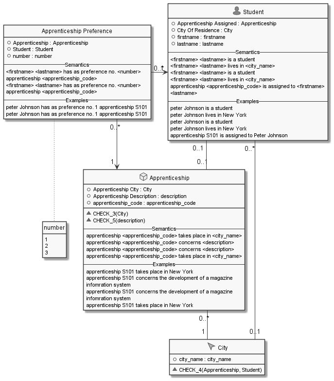
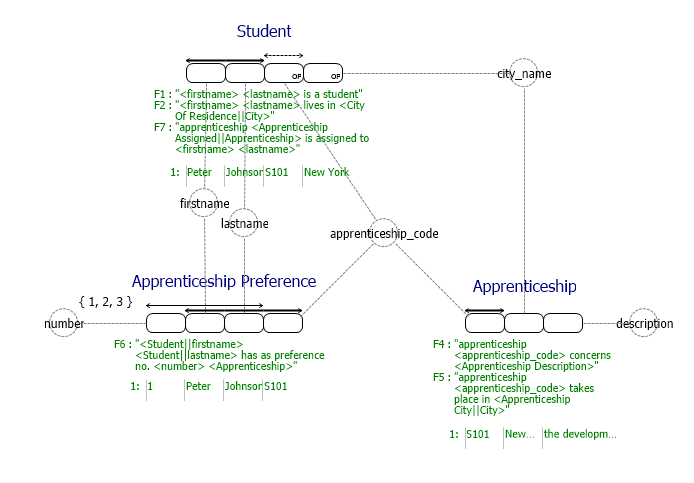

More information
Further information on fact based modeling can be found at the following websites:
- Link to: Wikipedia: NIAM
- Link to: www.starlab.vub.ac.be / Dogma
- Link to: Wikipedia: FCO-IM
- Link to: Wikipedia: Object role modeling
- Link to: www.sjirnijssen.eu
- Link to: www.orm.net
- Link to: www.ormfoundation.org
- Link to: http: www.starlab.vub.ac.be / Research
- Link to: www.dataconstellation.com / ActiveFacts
 